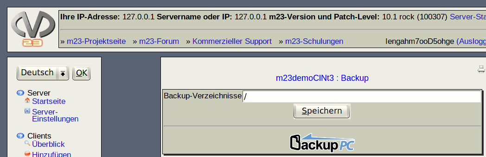

In diesem Dialog können Sie alle Verzeichnisse des Clients angeben, von denen ein Backup erstellt werden soll. Geben Sie diese Verzeichnisse dazu durch Kommata getrennt in der Eingabezeile bei ''Backup-Verzeichnisse'' an und klicken Sie anschließend auf ''Speichern''.
Das eigentliche Backup übernimmt das Programm BackupPC, das Sie mit einem Klick auf das Icon starten können. In der BackupPC-Oberfläche haben Sie Zugriff auf zusätzliche Backup-Funktionen. Benutzername und Paßwort sind bei BackupPC identisch zu den Zugangsdaten für die m23-Oberfläche.
root
2018-01-09